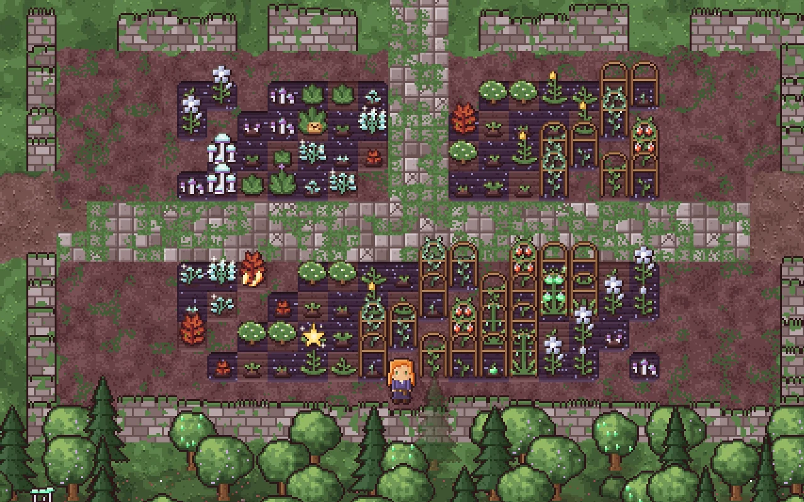
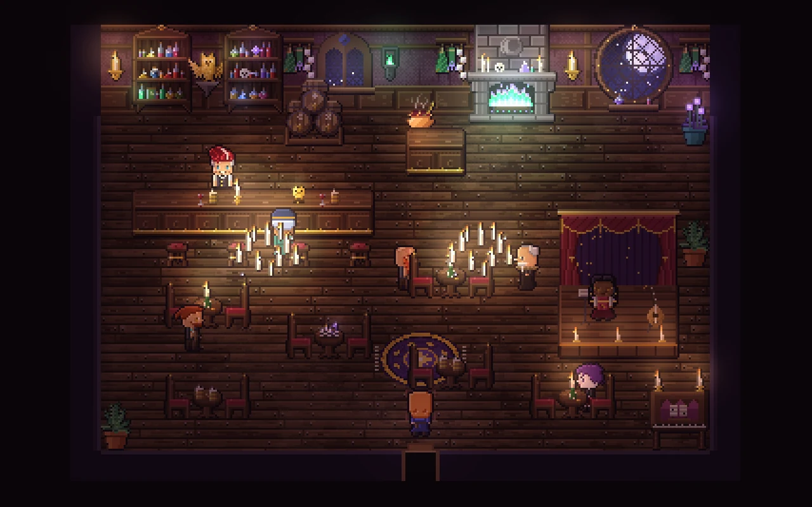
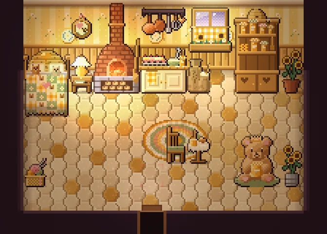
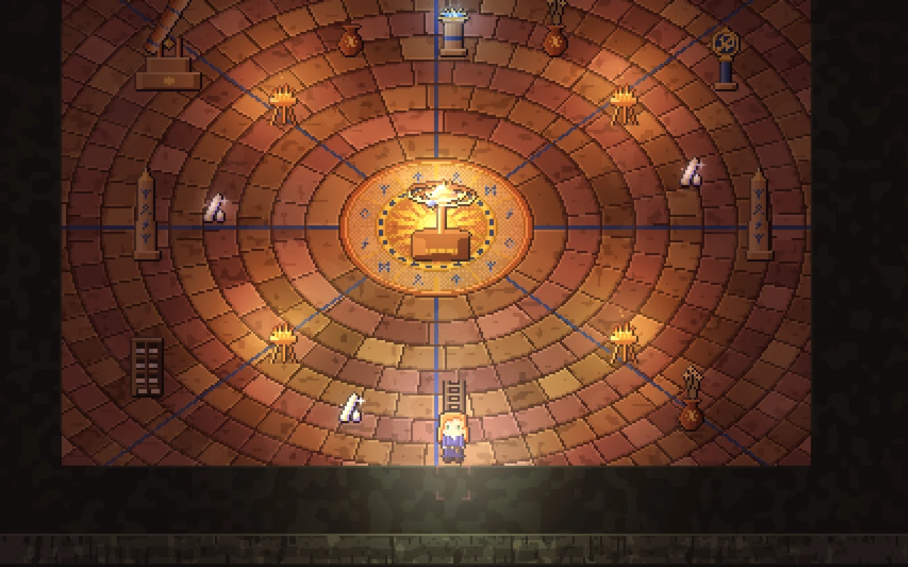

Grow
Wake a forgotten garden
Till the soil inside the old moon temple and plant moonpetals, glowcaps and mandrakes. Water them before bed: crops only grow on nights they've had a drink. The full moon speeds everything up.
A cosy pixel-art life sim
Wake a forgotten temple garden, brew potions from what you grow, befriend twenty villagers, and descend fifty floors of the Umbral Depths. It plays right here in your browser, for free.
Step one
You're Morwenna's old apprentice, coming home to a garden that has forgotten you. Pick someone, give them a name, and begin. You can change how they look later in the game.
What you'll do

Grow
Till the soil inside the old moon temple and plant moonpetals, glowcaps and mandrakes. Water them before bed: crops only grow on nights they've had a drink. The full moon speeds everything up.

Befriend
Twenty villagers keep their own hours: the baker, the runesmith, the dragon tamer, the barkeep with opinions. Talk to them each day and bring the gifts they love, and they'll open up.

Visit
Knock on doors. Jasmine bakes in a honey-coloured cottage, Amara maps the stars from her attic, and the Gilded Owl tavern stays warm long after dark. Everyone's home is worth a look around.

Descend
Below Starfall Ridge the caves go down and down. Mine ore and gems, take Guild bounties against legendary beasts, and now and then stumble on a rare floor: a forgotten library, a witch's hollow, a sunken observatory.
Ride
Caspian's Menagerie sells pets, gentle Shire horses and, once the Guild trusts you, sky dragons that fly over rooftops and rivers. That's your character up there.
Before you start
Everything is explained in the game as you go. These are the keys worth knowing.
On a phone or tablet, touch controls appear: a joystick on the left, buttons on the right.
The download is a single 3 MB file. Open it in Chrome, Edge, Firefox or Safari, no internet needed.